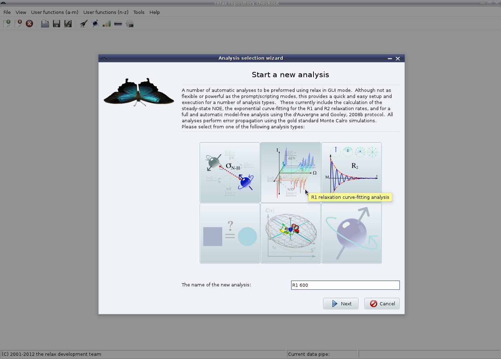
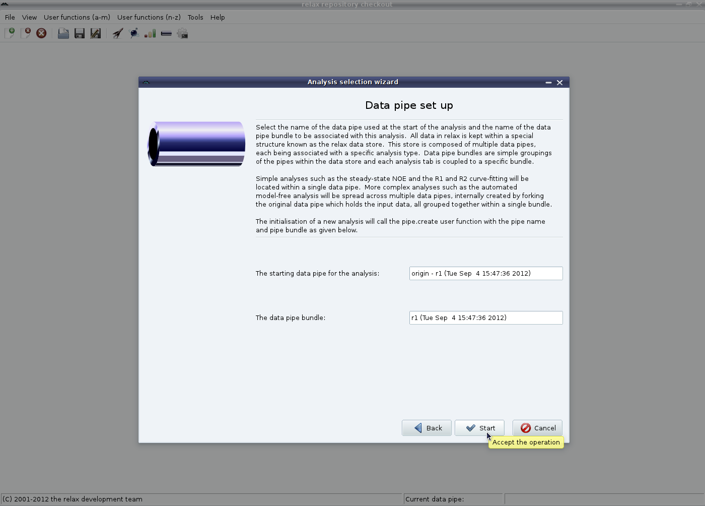

Next: Relax-fit GUI mode - Up: The relaxation curve-fitting auto-analysis Previous: The relaxation curve-fitting auto-analysis Contents Index
To begin the analysis, launch the analysis selection wizard (see Figure 1.4 on page ![[*]](crossref.png) ).
Select either the
R1 or
R2 analyses, and change the name of the analysis if you plan on running multiple analyses from different field strengths in one relax instance.
).
Select either the
R1 or
R2 analyses, and change the name of the analysis if you plan on running multiple analyses from different field strengths in one relax instance.
|

|
Then click on the ``Next'' button. On the second page click on ``Start'' to commence the analysis - this second part of the wizard does not need to be changed. For the R1 and R2 analyses in the GUI, a data pipe bundle containing only a single data pipe for that analysis will be created. This data pipe bundle can be safely ignored.
|

|
The relax user manual (PDF), created 2014-12-03.